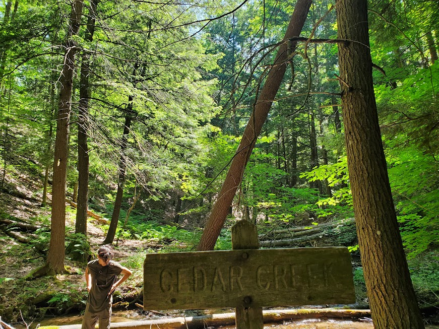

All things Nolan!
My name is Nolan Langer, I am 22 years old and a Senior in Computer Science at Michigan State University. I currently have an Intership at Jackson National Life in their Ignite SSA career program. I grew up in Whitmore Lake, MI and lived there my whole life until I went to college here and began living in a house with my friends after I moved out of the dorms Sophomore year.
I didn't have a particularly interesting early life, I went to school in the Whitmore Lake Public School system and grew up in the same house my whole life. I have an older brother who is 8.5 years older than me, Herbie (not named after the LoveBug). My Mom has always done bookkeeping and my dad went to college to be a Chemical Engineer but since I was born has been unable to work due to Multiple Sclerosis. I always really enjoyed camping, video games, and movies, nothing too interesting. I did okay in school but always had trouble with showing up on time in the morning and through middle school attendance in general.
Some of these have basis in what I enjoyed as a child like computer related things and camping. Cooking sort of arose when I got into highschool because I realized I always enjoyed cooking with my mom as a kid and also making food for friends and family so I started doing it a lot more and I love watching cooking videos just for fun and to get ideas of new techniques to try and new whole meals to make. I also go backpacking once or twice a year since two years ago when I decided to try and go camping in Manistee with two of my High School friends, I all that you see and the peace of being out in the woods. Software design sort of sprung up from how much I played video games as a kid and it has moved into how are they made and from there gone outside of just video games and an interest in the world of computer science in general. When I was in High School, thanks to some wonderful teachers I found a love of math after always thinking science was extremely cool as a kid so I think that has led me to where I am now.
